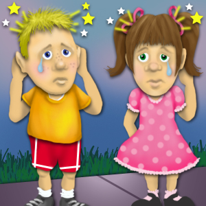
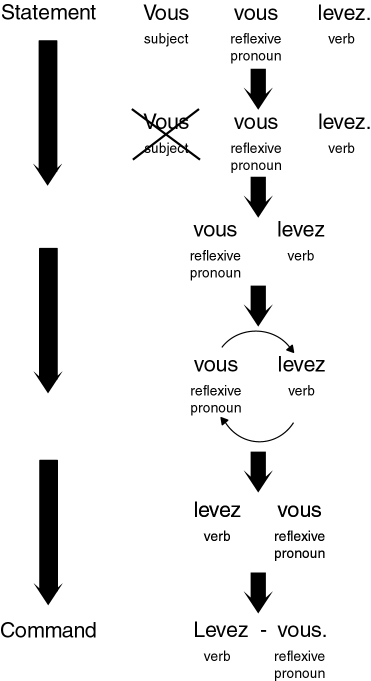

Comment se renseigner sur l’état de santé d’un malade
Décrire sa routine de tous les jours
Prononciation
Le e muet et e ouvert dans les verbes
pronominaux
Structure
Le verbe s’asseoir, to sit down
L’article défini avec les parties du corps
Les verbes pronominaux
Les verbes pronominaux avec les parties du corps
L’impératif des verbes pronominaux
Le gérondif
Tout ce qui et tout ce que
1. Conversation
Éliane
Bonsoir, Madame. On est venu se renseigner sur l’état de santé
d’Émile Lefèvre. Je m’appelle Éliane Kumassi. M. Lefèvre
travaille dans mon bureau et j’étais avec lui juste avant
l’agression.
se renseigner
to get information
se renseigner sur
to get information about
l’état
state, condition
la santé
health
l’état de santé
condition (referring to health)
se renseigner sur l’état de santé de qqn
to inquire about someone’s health, condition
avant
before
juste avant
just before, right before
une agression
attack, assault
Bonsoir, Madame. On est venu se renseigner sur l’état de santé
d’Émile Lefèvre. Je m’appelle Éliane Kumassi. M. Lefèvre
travaille dans mon bureau et j’étais avec lui juste avant
l’agression.
Good evening, (Ma’am). We came to inquire about the condition
of Émile Lefèvre. My name is Éliane Kumassi. Mr. Lefèvre works
in my office and I was with him just before the assault.
Réception
Attendez, je vais appeler son infirmier. Asseyez-vous, s'il
vous plaît.
un infirmier
(male) nurse
appeler
to call
Asseyez-vous.
Sit down.
Attendez, je vais appeler son infirmier. Asseyez-vous, s'il
vous plaît.
Wait, I’ll call his nurse. Sit down, please.
(The four friends get up as the male nurse walks in. No
handshake is necessary here.)
Infirmier
Bonsoir, Mademoiselle. Vous êtes donc la collègue de M.
Lefèvre. M. Lefèvre est dans un état critique. Le coup de
couteau a causé une perforation du poumon.
un/une collègue
colleague
vous êtes donc
so you are
critique
critical
dans un état critique
in critical condition
un coup
blow, stroke
un coup de couteau
stab, stabbing, knife wound
causer
to cause
une perforation
puncture, perforation
un poumon
lung
une perforation du poumon
a punctured lung
Bonsoir, Mademoiselle. Vous êtes donc la collègue de M.
Lefèvre. M. Lefèvre est dans un état critique. Le coup de
couteau a causé une perforation du poumon.
Good evening, Miss. So you're Mr. Lefèvre’s co-worker. Mr.
Lefèvre is in critical condition. The knife wound punctured
his lung.
Éliane
Mon Dieu! Quelle horreur!
Mon Dieu! Quelle horreur!
Oh my God! How horrible!
Infirmier
En plus, il est tombé en essayant d’échapper à son assassin.
en plus
moreover, in addition
tomber (passé composé with être)
to fall
il est tombé
he fell
échapper
to escape
un assassin
assailant
en essayant d'échapper son assassin
as he ran away from his assailant
En plus, il est tombé en essayant d’échapper à son assassin.
Moreover, he fell as he ran away from his assailant.
Paul
Il s’est fait mal en tombant?
le mal
pain, hurt; evil
faire mal à qqn
to hurt someone
se faire mal
to hurt oneself, get hurt
tombant
falling
en tombant
while falling, as he fell
Il s’est fait mal en tombant?
Did he get hurt when he fell?
Infirmier
Malheureusement, oui. Il s’est fracturé le bras droit et deux
côtes et il s’est cogné la tête. On l’a emmené aux urgences
avec une commotion cérébrale. Son corps était couvert de
contusions.
malheureusement
unfortunately
le bras
arm
le bras droit
right arm
se fracturer le bras
to break one’s arm (medical term)
la côte
rib
se fracturer une côte
to break a rib
cogner
to knock, hit, bang
se cogner la tête
to hit one’s head
la salle d’urgences
emergency room
les urgences
emergency room (colloquial)
emmener qqn aux urgences
to bring someone to the emergency room
une commotion
concussion
cérébral
cerebral, brain (adjective)
une commotion cérébrale
brain concussion, cerebral concussion
couvrir
to cover
couvert (past participle of couvert)
covered
couvert de
covered with
une contusion
bruise
couvert de contusions
covered with bruises
Malheureusement, oui. Il s’est fracturé le bras droit et deux
côtes et il s’est cogné la tête. On l’a emmené aux urgences
avec une commotion cérébrale. Son corps était couvert de
contusions.
Unfortunately, he did. He broke his right arm and two ribs and
he banged his head. He was brought to the emergency room with
a cerebral concussion. His body was covered with bruises.
Daniel
Vous croyez qu’il va s’en sortir, Monsieur?
s’en sortir
to pull through
Vous croyez qu’il va s’en sortir, Monsieur?
Do you think he’ll pull through, (Sir)?
Infirmier
C’est un cas compliqué. M. Lefèvre a attrapé une pneumonie et
il a de la fièvre. On lui donne des antibiotiques par
intraveineuse. Mais il ne faut pas désespérer.
un cas
case
un cas compliqué
a complicated case
attraper
to catch
une pneumonie
pneumonia
attraper une pneumonie
to catch pneumonia
la fièvre
fever
avoir de la fièvre
to have a fever
un antibiotique
an antibiotic
on lui donne des antibiotiques
he’s being given antibiotics
l’intraveineuse (feminine)
intravenous injection
par intraveineuse
intravenously
désespérer
to despair, lose hope
il ne faut pas
one musn’t
il ne faut pas désespérer
one musn’t give up hope
C’est un cas compliqué. M. Lefèvre a attrapé une pneumonie et
il a de la fièvre. On lui donne des antibiotiques par
intraveineuse. Mais il ne faut pas désespérer.
It’s a complicated case. Mr. Lefèvre caught pneumonia and he
has a fever. He’s being given antibiotics intravenously. But
you musn’t give up hope.
Éliane
Est-ce qu’on peut le voir?
Est-ce qu’on peut le voir?
Can we see him?
Infirmier
Non. Les visites dans l’unité de soins intensifs sont
strictement défendues.
une visite
visit
une unité
unit
le soin
care
les soins intensifs
intensive care
l’unité de soins intensifs
intensive care unit
strictement
strictly
défendre
to prohibit; to defend
défendu
forbidden
Non. Les visites dans l’unité de soins intensifs sont
strictement défendues.
No. Visits to the intensive care unit are strictly prohibited.
Éliane
Mais Émile a risqué sa vie pour me défendre. Je vous en
supplie, Monsieur, laissez-moi le voir.
risquer
to risk
la vie
life
risquer sa vie
to risk one’s life
défendre
to prohibit; to defend
pour
in order to
pour me défendre
in order to defend me
supplier
to beg
je vous en supplie
I beg you
laisser
to let
laissez-moi
let me
Mais Émile a risqué sa vie pour me défendre. Je vous en
supplie, Monsieur, laissez-moi le voir.
But Émile risked his life to defend me. I beg you, (Sir), let
me see him.
(la jambe, le doigt, le pouce, le doigt du pied, l’orteil)
(leg, finger, thumb, toe, big toe)
Il a la jambe dans le plâtre.
His leg is in a cast.
Il s’est foulé la cheville.
He sprained his ankle.
Tu tousses. Tu es enrhumé?
You’re coughing. Do you have a cold?
Oui, j’ai attrapé un rhume.
Yes, I caught a cold.
J’ai le nez qui coule et j’éternue tout le temps.
I have a runny nose and I sneeze all the time.
Je ne me sens pas bien.
I don’t feel well.
Je me suis enrhumé.
I’ve caught a cold.
Oui, tu as la voix rauque.
Yes, your voice is hoarse.
Tu m’as fait mal!
You hurt me!
Éxcuse-moi. Je ne l’ai pas fait exprès.
I’m sorry. I didn’t do it on purpose.
Je vais me raser.
I’m going to shave.
Tu veux te laver?
Do you want to wash up?
Les enfants doivent s’habiller.
The children ought to get dressed.
Je me suis endormi(e) tout de suite.
I fell asleep right away.
Je me suis réveillé(e) à sept heures.
I got up at seven o’clock.
Elle ne s’est pas encore maquillée.
She hasn’t put on her makeup yet.
Je veux me brosser les dents.
I want to brush my teeth.
Tu as les cheveux en désordre! Peigne-toi!
Your hair is a mess! Comb your hair!
Tu t’es lavé la tête?
Did you wash your hair?
Oui, maintenant je me sèche les cheveux.
Yes, now I’m drying my hair.
Je prends une douche. / Je me douche.
I take a shower.
Je prends un bain.
I take a bath.
Regarde. Tu saignes!
Look. You’re bleeding!
Oui, je me suis coupé le doigt.
Yes, I cut my finger.
Il faut mettre un pansement.
You have to put a Band-Aid on it.
d’autres parties du corps
other parts of the body
la bouche
mouth
les lèvres
lips
le front
forehead
la joue
cheek
la cuisse
thigh
le mollet
calf
le cœur
heart
d’autres mots pour parler de la santé
other words related to health
l’infirmière
female nurse
la blessure
wound
blesser
to wound
malade
sick
3. Prononciation
You learned in Préparation 17 that in everyday speech, the
distinction between closed e and open e at the end
of a word is often blurred, usually in favor of closed e.
Thus, in the first-person singular, the imperfect and the
passé composé of -er verbs is indicated solely by
the vowel of the first syllable, since the forms
parlais and parlé are pronounced alike. Note the
difference between je parlais and j’ai parlé.
Similarly, in the third-person singular of pronominal verbs, the
syllables se versus s’est carry the burden of
distinguishing the imperfect from the passécomposé in spoken French. Listen to the informal
pronunciation of these forms:
Il
se
levait.
Il
s’est
levé.
Elle
se
réveillait.
Elle
s’est
réveillée.
On
se
méfiait.
On
s’est
méfié.
Il
se
lavait.
Il
s’est
lavé.
Elle
se
peignait.
Elle
s’est
peignée.
On
se
rasait.
On
s’est
rasé.
Exercice de Compréhension
Listen for the difference between the passé composé and the
imperfect. For each verb phrase you hear, provide the tense.
Show Answers
passé composé
imperfect
imperfect
imperfect
passé composé
passé composé
imperfect
passé composé
imperfect
passé composé
4. Exercices oraux 1-2
Exercice oral 1: L’imparfait et le passé composé
Provide the passé composé form for the ten verb phrases
given in the imparfait.
Modèle
Il se levait.
Il s’est levé.
Commençons.
Exercice oral 2: Le passé composé et l’imparfait
Provide the imparfait form for the ten verb phrases given in the
passé composé. Pay special attention to the pronunciation
of the vowel in the syllables se and s’est in your
responses.
Modèle
Il s'est levé.
Il se levait.
Commençons.
La Structure De La Langue 1: Le Verbe “S’Asseoir”
The verb s’asseoir, to sit down, is irregular. It has a
variable stem, but note that the third person plural
(ils/elles) has the same vowel as the nous and
vous forms. Note also that it is a pronominal verb.
Je
m’assieds
dans le jardin.
Nous
nous asseyons
dans le jardin.
Tu
t’assieds
dans le jardin.
Vous
vous asseyez
dans le jardin.
Il/Elle/On
s’assied
dans le jardin.
Ils/Elles
s’asseyent
dans le jardin.
The past participle, which you have already learned, is assis.
Je
me suis assis(e)
dans le jardin.
Nous
nous sommes assis(es)
dans le jardin.
Tu
t’es assis(e)
dans le jardin.
Vous
vous êtes assis(e)(s)
dans le jardin.
Il
s’est assis
dans le jardin.
Ils
se sont assis
dans le jardin.
Elle
s’est assise
dans le jardin.
Elles
se sont assises
dans le jardin.
On
s’est assis
dans le jardin.
Note the imperfect form of s’asseoir.
Je
m’asseyais
dans le jardin.
Nous
nous asseyions
dans le jardin.
Tu
t’asseyais
dans le jardin.
Vous
vous asseyiez
dans le jardin.
Il/Elle/On
s’asseyait
dans le jardin.
Ils/Elles
s’asseyaient
dans le jardin.
5. Exercices oraux 3-4
Exercice oral 3: Personne n’est debout
The speaker will ask you if the following people are standing.
Answer in each case that they have already sat down.
Modèle
Maurice est debout?
Non, il s’est assis.
Commençons.
Exercice oral 4: Je peux m’asseoir?
Answer the following questions in the affirmative. The verbs used
with s’asseoir are vouloir and pouvoir.
Remember that the reflexive pronoun used with an infinitive
changes to agree with the subject of the sentence.
Modèle
Il veut s’asseoir?
Oui, il veut s’asseoir.
Commençons.
6. Exercice écrit 1
Say where the following people are sitting down by completing
these sentences with the correct present-tense forms of
s’asseoir. Click on the underlines to see the correct
answers.
Je
________
m’assieds
sur le sofa.
Tu
________
t’assieds
à côté de moi.
La grands-parents
________
s’asseyent
à table.
M. Jolivet
________
s’assied
dans son bureau.
Nous, on
________
s’assied
dans le métro.
Émile et Éliane
________
s’asseyent
dans le café.
Vous
________
vous asseyez
dans le jardin.
Nous
________
nous asseyons
avec vous.
Tout le monde
________
s’assied
pour manger.
Moi, je
________
m’assieds
aussi.
La Structure De La Langue 2: L’Expression De La Possession Avec Les
Parties Du Corps
Compare the following sentences in English and French.
Il a ouvert les yeux.
He opened his eyes.
Il a un couteau dans le dos!
He has a knife in his back!
Il a perdu la mémoire.
He lost his memory.
Questions:
Which determiner precedes the nouns yeux, dos, and
mémoire in the French sentences?
Which determiner precedes the nouns eyes, back, and
memory in the English sentences?
Show Answers
The definite article: les yeux, ledos, la mémoire.
The possessive adjective his: his eyes, his back,
his memory.
Thus, as les yeux and le dos illustrate, French uses the
definite article with parts of the body, while English uses a
possessive adjective.
Now listen to the following sentences.
Je leur ai lavé les mains.
I washed their hands.
Je lui ai essuyé le visage.
I wiped his face.
Il m’a fait mal au bras.
He hurt my arm.
Le médecin lui écoute le cœur.
The doctor listens to his heart.
Questions:
Which determiner precedes the nouns mains, visage,
bras, and
cœur
in the French sentences?
Which part of the French sentence clarifies to whom the part of the
body belongs?
Show Answers
The definite article: lesmains,
le visage, lebras, and
le cœur.
The indirect object pronoun: leur, lui, me, and lui.
When the part of the body does not belong to the subject of the
sentence, an indirect object pronoun is added to indicate the
possessor. Note that French and English do not agree on the uses of
singular and plural with parts of the body. For instance, when
referring to children in French, one would say:
Je leur ai lavé le visage.
I washed their faces.
Je leur ai essuyé le nez.
I wiped their noses.
7. Exercices oraux 5-6
Exercice oral 5: J’ai mal!
Using the expression avoir mal à + part of the body,
say what part of the body hurts.
Modèle
His head hurts.
Il a mal à la tête.
Commençons.
Exercice oral 6: Oh, ces enfants!
Say what actions this mother takes to keep her children clean.
Modèle
I washed their hands.
Je leur ai lavé les mains.
Commençons.
8. Exercice écrit 2
Complete the following French sentences so that they express the
same ideas as the English sentences. Click on "show answer" to see
the correct answers.
They closed their eyes.
Ils ont fermé
______
les
yeux
The doctor listened to my lungs.
Le médecin
______
m’
a écouté
______
les
poumons.
The child opened his mouth.
L’enfant a ouvert
______
sa
bouche.
Did the nurse bandage your knee?
L’infirmière
______
t’/vous
a mis un pansement sur
______
le
genou?
Be careful! You’re hurting my arm!
Fais attention! Tu
______
me
fais mal
______
au
bras!
His wrist hurts.
Il a mal
______
au
poignet.
La Structure De La Langue 3: Les Verbes Pronominaux
Reflexive verbs are most commonly used to express actions in one’s
daily routine. In the following verbs, the reflexive pronoun is a
direct object and is in agreement with the past participle in the
passé composé.
se réveiller
to wake up
se lever
to get up
se laver
to wash up
se raser
to shave
se maquiller
to put on makeup
se peigner
to comb one’s hair
s’habiller
to get dressed
se déshabiller
to get undressed
se coucher
to go to bed
s’endormir
to fall asleep
se rendormir
to fall asleep again, to go back to sleep
A.
Je lave le visage à/de l’enfant.
I wash the child’s face.
B.
Je lui lave le visage.
I wash his/her face.
C.
Je me lave le visage.
I wash my face.
D.
Il brosse les dents au/du chien.
He brushes the dog’s teeth.
E.
Il lui brosse les dents.
He brushes his (the dog’s) teeth.
F.
Il se brosse les dents.
He brushes his (his own) teeth.
G.
Les enfants ne font pas mal aux animaux.
The children aren’t hurting the animals.
H.
Les enfants ne leur font pas mal.
The children aren’t hurting them.
I.
Les enfants ne se font pas mal.
The children aren’t hurting themselves.
Questions:
What is the function of the phrases à l’enfant in sentence A,
au chien in sentence D, and aux animaux in sentence G?
What is the function of the noun phrases le visage in
sentence A and les dents in sentence D?
What replaces the phrases à l’enfant in sentence B,
au chien in sentence E, and aux animaux in sentence H?
What role does the reflexive pronoun play in sentences C, F, and I?
Show Answers
The phrases à l’enfant in sentence A, au chien in
sentence D, and aux animaux in sentence G are indirect
object complements. They are joined to the verb by the preposition
à.
The noun phrases le visage in sentence A, and
les dents in sentence D are direct object complements of
the verbs.
The phrases à l’enfant in sentence B, au chien in
sentence E, and aux animaux in sentence H are replaced by
indirect object pronouns: lui in sentences B and E, and
leur in sentence H.
The reflexive pronoun plays the role of indirect object in
sentences C, F, and I.
Thus, when a reflexive verb has a direct object, the reflexive pronoun
is an indirect object. There is no agreement of the past participle in
these cases. Compare the following sentences:
Les petites filles se sont lavées.
The little girls washed up.
In the above sentence, the reflexive pronoun se is a direct
object. The past participle agrees with it in gender and number.
Les petites filles se sont lavé les mains.
The little girls washed their hands.
In the above sentence, the reflexive pronoun se is an indirect
object. There is no agreement of the past participle because the
direct object (les mains) follows the verb.
Here are some additional reflexive verbs that express aspects of one’s
personal routine.
se laver les mains/le visage/la tête
to wash one’s hands/face/hair
se sécher les cheveux
to dry one’s hair
se brosser les dents
to brush one’s teeth
The same pattern is used in the following expressions having to do
with medical conditions.
se casser le bras/la jambe/le poignet
to break one’s arm/leg/wrist
se fracturer le pied/une côte
to break one’s foot/a rib
se fouler la cheville
to twist one’s ankle
se couper le doigt
to cut one’s finger
9. Exercices oraux 7-9
Exercice oral 7: Avant d’aller à la fac
Use the passé composé to say what Daniel did yesterday
morning before he went to the university.
Modèle
se réveiller à sept heures
Il s’est réveillé à sept heures.
Commençons.
Exercice oral 8: Avant d’aller au bureau
Use the passé composé to say what Éliane did yesterday
morning before going to work at CyberAvenir.
Modèle
se réveiller à six heures et demie
Elle s’est réveillée à six heures et demie.
Commençons.
Exercice oral 9: Maintenant c’est différent
Using the imperfect tense and the present tense, explain how
things were different in the past.
Modèle
tous les jours
Tu te rases tous les deux jours?
Avant je me rasais tous les deux jours. Maintenant je me rase
tous les jours.
Commençons.
10. Exercice oral 10
Exercice oral 10: Les pauvres enfants!
The speaker will ask you what happened to the children. In each
case, look at the picture and say where they hurt themselves.

Modèle
Qu’est-ce qui est arrivé aux enfants?
Ils se sont fait mal à la tête.
Commençons.
11. Exercice écrit 3
Respond to each of the following questions by saying that the
people mentioned performed these acts this morning. Pay special
attention to the agreement of the past participle. Click on "show
answer" to see the correct answers.
Modèle:
Jean ne se peigne pas?
Il s’est peigné ce matin.
Les enfants ne se lavent pas le visage?
(show answer)
Ils se sont lavé le visage ce matin.
Monique ne se lave pas la tête?
(show answer)
Elle s’est lavé la tête ce matin.
Lise ne se sèche pas les cheveux?
(show answer)
Elle s’est séché les cheveux ce matin.
Les garçons ne se rasent pas?
(show answer)
Ils se sont rasés ce matin.
Ta sœur ne s’habille pas?
(show answer)
Elle s’est habillée ce matin.
Ta copine ne se maquille pas?
(show answer)
Elle s’est maquillée ce matin.
Les garçons ne se brossent pas les dents?
(show answer)
Ils se sont brossé les dents ce matin.
La Structure De La Langue 4: L’Impératif Des Verbes Pronominaux
Reflexive verbs form their imperative (command forms) as other verbs
do, by dropping the subject pronouns. Remember that the informal
(tu)imperative of -er verbs drops the final s of
the verb form.
Tu ne te lèves pas.
Ne te lève pas.
Vous ne vous faites pas mal.
Ne vous faites pas mal.
Nous ne nous asseyons pas.
Ne nous asseyons pas.
The above forms are all negative commands. Look at the following
affirmative command forms.
Tu te laves.
Lave-toi.
Vous vous peignez.
Peignez-vous.
Nous nous asseyons.
Asseyons-nous.
Questions:
Where are reflexive pronouns placed in affirmative commands?
What happens to the pronoun te when moved to a position after
the verb?
Show Answers
As is the case with other object pronouns, reflexive pronouns in
affirmative commands (telling someone to do something) are placed
after the verb and connected to it with a hyphen. Note that the
vous of peignez-vous and the nous of
asseyons-nous are reflexive pronouns, and not subjects.
The pronoun te changes to toi when moved after the
verb in command forms. This is parallel to me changing to
moi in commands: vous me laissez changes to
laissez-moi.

12. Exercices oraux 11-13
Exercice oral 11: Écoute, Baudoin!
Baudoin doesn’t want to do any of the things asked of him. Using
the cues provided, tell him to do the following tasks.
Modèle
Je ne veux pas me lever.
Écoute, Baudoin! Lève-toi!
Commençons.
Exercice oral 12: En colonie de vacances
You’re a camp counselor (le moniteur / la monitrice). Use vous commands to assign tasks
to your group to
prepare them for their daily routines.
Modèle
s’asseoir
Asseyez-vous.
Commençons.
Exercice oral 13: Oh, cet enfant
Baudoin’s cousins have come for a visit and he is misbehaving.
Tell him not to do the following things.
Modèle
se coucher sur le plancher
Ne te couche pas sur le plancher.
Commençons.
13. Exercices écrits 4-5
Exercice écrit 4
Imagine that you have a child at summer camp. Using the imperative
of the expressions below, give him or her some good advice for a
happy and safe summer. Click on "show answer" to see the correct
answers.
se laver les mains avant de manger
(show answer)
Lave-toi les mains avant de manger.
ne pas se fouler le poignet
(show answer)
Ne te foule pas le poignet.
se reposer un peu tous les jours
(show answer)
Repose-toi un peu tous les jours.
ne pas s’enrhumer
(show answer)
Ne t’enrhume pas.
ne pas se cogner la tête
(show answer)
Ne te cogne pas la tête.
se coucher de bonne heure
(show answer)
Couche-toi de bonne heure.
se réveiller avec les autres
(show answer)
Réveille-toi avec les autres.
se peigner tous les jours
(show answer)
Peigne-toi tous les jours.
se brosser les dents deux fois par jour
(show answer)
Brosse-toi les dents deux fois par jour.
s’amuser bien
(show answer)
Amuse-toi bien!
Exercice écrit 5
Now imagine you have two children at summer camp. Using the
vous form of the imperative, give them the same advice for
a happy and safe summer.
se laver les mains avant de manger
(show answer)
Lavez-vous les mains avant de manger.
ne pas se fouler le poignet
(show answer)
Ne vous foulez pas le poignet.
se reposer un peu tous les jours
(show answer)
Reposez-vous un peu tous les jours.
ne pas s’enrhumer
(show answer)
Ne vous enrhumez pas.
ne pas se cogner la tête
(show answer)
Ne vous cognez pas la tête.
se coucher de bonne heure
(show answer)
Couchez-vous de bonne heure.
se réveiller avec les autres
(show answer)
Réveillez-vous avec les autres.
se peigner tous les jours
(show answer)
Peignez-vous tous les jours.
se brosser les dents deux fois par jour
(show answer)
Brossez-vous les dents deux fois par jour.
s’amuser bien
(show answer)
Amusez-vous bien!
La Structure De La Langue 5: Le Gérondif
The French gerund is closest in usage to the English present
participle - the form of the verb ending in ing. To form the
French present participle, add ant to the stem of the verb.
marcher
marchant
choisir
choisissant
descendre
descendant
lire
lisant
faire
faisant
Three verbs have irregular present participles:
être
étant
avoir
ayant
savoir
sachant
The most common use of the -ant form is the gérondif. In
the gérondif, the -ant form is preceded by en.
The gérondif does not change to show subject or tense. It
always refers to the subject of the main verb and is added to
sentences to express when something occurred or why.
Il est tombé
en fuyant
son assassin.
He fell
while fleeing from
his murderer.
Il s’est fait mal
en tombant
?
Did he hurt himself
falling (because he fell)
?
Note that with reflexive verbs in the gérondif, the reflexive
pronoun changes according to the subject of the sentence.
Je
me suis coupé en
me
rasant.
I cut myself while shaving.
Il
chantait en
se
douchant.
He sang while taking a shower.
14. Exercice oral 14
Exercice oral 14: Quand et pourquoi
Using the gérondif, change each double-claused sentence
into a single clause.
Modèle
Émile est tombé quand il fuyait son assassin.
Émile est tombé en fuyant son assassin.
Commençons.
15. Exercices écrits 6-7
Exercice écrit 6: Les émotions et leurs causes
Rewrite each pair of sentences as a single sentence using the
gérondif. Click on "show answer" to see the correct
answers.
Modèle:
Éliane a pleuré. Elle a vu Émile.
Éliane a pleuré en voyant Émile.
Régine a trouvé le message. Elle a cherché dans son sac.
(show answer)
Regine a trouvé le message en cherchant dans son sac.
Éliane frémissait de peur. Elle a lu le message.
(show answer)
Éliane frémissait de peur en lisant le message.
Les copains désespéraient. Ils écoutaient le médecin.
(show answer)
Les copains désespéraient en écoutant le médecin.
Ils devenaient tristes. Ils pensaient à Émile.
(show answer)
Ils devenaient tristes en pensant à Émile.
Ils ne parlaient pas. Ils sont sortis de l’hôpital.
(show answer)
Ils ne parlaient pas en sortant de l’hôpital.
Exercice écrit 7: Je suis tombé!
Rewrite each pair of sentences as a single sentence using the
gérondif. Click on "show answer" to see the correct
answers.
J’ai traversé la rue. Je courais.
(show answer)
J’ai traversé la rue en courant.
Je suis tombé. Je traversais la rue.
(show answer)
Je suis tombé en traversant la rue.
Je me suis fait mal au genou. Je suis tombé.
(show answer)
Je me suis fait mal au genou en tombant.
Je marchais mal. Je suis allé chez le médecin.
(show answer)
Je marchais mal en allant chez le médecin.
Le médecin m’a fait mal. Il nettoyait le genou blessé.
(show answer)
Le médecin m’a fait mal en nettoyant le genou blessé.
La Structure De La Langue 6: Tout Ce Qui, Tout Ce Que
After the word tout, everything, French uses
ce qui and ce que, thus saying the equivalent of
all what rather than all that as we do in English.
Dis-moi
tout ce qui
est important.
Tell me everything that’s important.
Il faut réparer
tout ce qui
est en panne.
We have to fix everything that is broken.
Je vais te montrer
tout ce que
j’ai acheté.
I’m going to show you everything that I bought.
Tout cequ
’il dit est faux.
Everything (that) he says is false.
16. Exercices oraux 15-16
Exercice oral 15: Prends tout!
Using the construction tout ce qui, tell a friend to take
everything he or she finds in the following places.
Modèle
sur la table
Prends tout ce qui est sur la table.
Commençons.
Exercice oral 16: Ils font attention à tout!
Tell your friend that others are carefully watching everything he
or she does.
Modèle
Je fais des choses.
Ils font attention à tout ce que tu fais.
Commençons.
19. Analyse
Analyse
Conversation (19.1 through 19.23)
se renseigner
to get information
se renseigner sur
to get information about
l’état
state, condition
la santé
health
l’état de santé
condition (referring to health)
se renseigner sur l’état de santé de qqn
to inquire about someone’s health, condition
avant
before
juste avant
just before, right before
une agression
attack, assault
Bonsoir, Madame. On est venu se renseigner sur l’état de
santé d’Émile Lefèvre. Je m’appelle Éliane Kumassi. M. Lefèvre
travaille dans mon bureau et j’étais avec lui juste avant
l’agression.
Good evening, (Ma’am). We came to inquire about the condition
of Émile Lefèvre. My name is Éliane Kumassi. Mr. Lefèvre works
in my office and I was with him just before the assault.
un infirmier
(male) nurse
appeler
to call
Asseyez-vous.
Sit down.
Attendez, je vais appeler son infirmier. Asseyez-vous, s'il
vous plaît.
Wait, I’ll call his nurse. Sit down, please.
un/une collègue
colleague
vous êtes donc
so you are
critique
critical
dans un état critique
in critical condition
un coup
blow, stroke
un coup de couteau
stab, stabbing, knife wound
causer
to cause
une perforation
puncture, perforation
un poumon
lung
une perforation du poumon
a punctured lung
Bonsoir, Mademoiselle. Vous êtes donc la collègue de M.
Lefèvre. M. Lefèvre est dans un état critique. Le coup de
couteau a causé une perforation du poumon.
Good evening, Miss. So you're Mr. Lefèvre’s co-worker. Mr.
Lefèvre is in critical condition. The knife wound punctured
his lung.
Mon Dieu! Quelle horreur!
Oh my God! How horrible!
en plus
moreover, in addition
tomber (
passé composé
with
être
)
to fall
il est tombé
he fell
échapper
to escape
un assassin
assailant
en essayant d'échapper son assassin
as he ran away from his assailant
En plus, il est tombé en essayant d’échapper à son assassin.
Moreover, he fell as he ran away from his assailant.
le mal
pain, hurt; evil
faire mal à qqn
to hurt someone
se faire mal
to hurt oneself, get hurt
tombant
falling
en tombant
while falling, as he fell
Il s’est fait mal en tombant?
Did he get hurt when he fell?
malheureusement
unfortunately
le bras
arm
le bras droit
right arm
se fracturer le bras
to break one’s arm (medical term)
la côte
rib
se fracturer une côte
to break a rib
cogner
to knock, hit, bang
se cogner la tête
to hit one’s head
la salle d’urgences
emergency room
les urgences
emergency room (colloquial)
emmener qqn aux urgences
to bring someone to the emergency room
une commotion
concussion
cérébral
cerebral, brain (adjective)
une commotion cérébrale
brain concussion, cerebral concussion
couvrir
to cover
couvert (past participle of
couvert
)
covered
couvert de
covered with
une contusion
bruise
couvert de contusions
covered with bruises
Malheureusement, oui. Il s’est fracturé le bras droit et deux
côtes et il s’est cogné la tête. On l’a emmené aux urgences
avec une commotion cérébrale. Son corps était couvert de
contusions.
Unfortunately, he did. He broke his right arm and two ribs
and he banged his head. He was brought to the emergency room
with a cerebral concussion. His body was covered with
bruises.
s’en sortir
to pull through
Vous croyez qu’il va s’en sortir, Monsieur?
Do you think he’ll pull through, (Sir)?
un cas
case
un cas compliqué
a complicated case
attraper
to catch
une pneumonie
pneumonia
attraper une pneumonie
to catch pneumonia
la fièvre
fever
avoir de la fièvre
to have a fever
un antibiotique
an antibiotic
on lui donne des antibiotiques
he’s being given antibiotics
l’intraveineuse (feminine)
intravenous injection
par intraveineuse
by intravenous
désespérer
to despair, lose hope
il ne faut pas
one musn’t
il ne faut pas désespérer
one musn’t give up hope
C’est un cas compliqué. M. Lefèvre a attrapé une pneumonie et
il a de la fièvre. On lui donne des antibiotiques par
intraveineuse. Mais il ne faut pas désespérer.
It’s a complicated case. Mr. Lefèvre caught pneumonia and he
has a fever. He’s being given antibiotics intravenously. But
you musn’t give up hope.
Est-ce qu’on peut le voir?
Can we see him?
une visite
visit
une unité
unit
le soin
care
les soins intensifs
intensive care
l’unité de soins intensifs
intensive care unit
strictement
strictly
défendre
to prohibit; to defend
défendu
forbidden
Non. Les visites dans l’unité de soins intensifs sont
strictement défendues.
No. Visits to the intensive care unit are strictly
prohibited.
risquer
to risk
la vie
life
risquer sa vie
to risk one’s life
défendre
to prohibit; to defend
pour
in order to
pour me défendre
in order to defend me
supplier
to beg
je vous en supplie
I beg you
laisser
to let
laissez-moi
let me
Mais Émile a risqué sa vie pour me défendre. Je vous en
supplie, Monsieur, laissez-moi le voir.
But Émile risked his life to defend me. I beg you, (Sir), let
me see him.